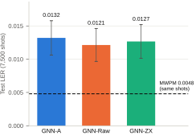
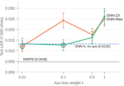

Question. A neural decoder sees only the syndrome, but in training it can also be asked to predict where the faults were. Does giving that auxiliary target in propagated form help more than giving it in raw form, and does either help over no auxiliary target? The propagated form is each fault's Pauli frame after conjugation through the rest of the Clifford circuit. Three arms share one backbone. The aux head is used only in training, and every arm decodes from the syndrome alone:
The loss is BCE(flip) + λ · mean per-qubit CE(aux).
Pipeline.
return_errors=True, so detectors, label and both targets come from the same fired errors. Propagated targets come from Stim's FlipSimulator. A SpiderTrace-engine adapter matches it with 0 of 7,367 mismatches, and building it exposed a CNOT Y-propagation bug in the engine (e2240d5).qec_run.py). 50,000 shots are split by a fixed split_seed into 35,000 train, 7,500 validation and 7,500 test shots, the same for every arm and seed. Raw and ZX sweep the same λ grid, and λ is chosen by validation LER. MWPM (PyMatching) decodes the identical test shots. Paired comparisons use an exact McNemar test.Statistical power. With 7,500 test shots, one binomial standard error at the d=5 GNN level (LER 0.0127, about 95 errors) is 0.0013, and the 95% half-width is 0.0025. The spread between arms at d=5 is 0.0011.
This is my first-hand account, with commits from git log. I built and ran the study with Claude Code as the main implementer and auditor; I set the questions, reviewed every diff and chose what to run. Agent tasks were narrowly scoped, including read-only audits that could not edit code, and every result had to carry its own provenance.
qec_run.py (10d3835). The original training path was not symmetric. Only GNN-ZX swept λ, selection used validation loss, and metrics were reported on the validation split. The runner sweeps one λ grid for both aux arms, selects by validation LER and holds out a test split fixed independently of the model seed. It also compiles a seeded DEM sampler, because the dataset builder's sampler was unseeded.--aux-data-qubits-only and --aux-class-weight inv-freq, applied identically to Raw and ZX, and aux diagnostics in every JSON. Section 3.2 confirms the collapse.On the requested AWS GPUs the same loop scales: an agent generates the sweep (arms, seeds, λ, distance) and launches each job in the background, writing its provenance JSON to persistent storage. The report build already selects runs by their recorded config and skips dirty-tree files, so new results reach the tables and figures without hand-copying.
Test LER per seed (selected λ in grey). All seeds share one test split.
| Arm | Seed 0 | Seed 1 | Seed 2 | Mean ± std |
|---|---|---|---|---|
| GNN-A | 0.0587 | 0.0596 | 0.0595 | 0.0592 ± 0.0005 |
| GNN-Raw | 0.0580 (0.5) | 0.0541 (0.1) | 0.0589 (0.5) | 0.0570 ± 0.0025 |
| GNN-ZX | 0.0568 (0.5) | 0.0593 (0.5) | 0.0583 (0.5) | 0.0581 ± 0.0013 |
| MWPM (same 7,500 shots) | 0.0545 |
| ZX vs Raw | ZX right, Raw wrong | Raw right, ZX wrong | p |
|---|---|---|---|
| Seed 0 | 70 | 61 | 0.485 |
| Seed 1 | 56 | 95 | 0.0019 |
| Seed 2 | 87 | 82 | 0.758 |
| Pooled* | 213 | 238 | 0.258 |
*Pooling sums discordant counts over seeds that share the same 7,500 test shots, so it over-counts and the pooled p is not an independent test.
GNN means lie 0.0025 to 0.0047 above MWPM on the same shots, or 0.9 to 1.8 single-LER standard errors (0.0027). There is no paired GNN vs MWPM test because the models were not saved. The ZX vs Raw tests disagree across seeds. Seeds 0 and 2 show no difference, and on seed 1 Raw is better (95 vs 56 discordant shots, p = 0.0019). The pooled value is p = 0.258, subject to the caveat above. All arms sit near MWPM, a ceiling at this distance and noise rate; the never-flip decoder scores 0.184.
The table gives the fraction of aux slots whose target is I, the fraction predicted I, and accuracy on non-I targets (recall). The diagnostic rows are short CPU runs on the current code (commit 7d0a835, clean tree: d=3, p=0.01, 4,000 shots, 25 epochs, λ = 0.1, seed 0). They differ only in the two aux flags. Their flip head did not learn at this budget (every arm's test LER is 0.1433), so only their aux metrics are used.
| Run | Raw: target I | Raw: pred. I | Raw: non-I acc. | ZX: target I | ZX: pred. I | ZX: non-I acc. |
|---|---|---|---|---|---|---|
| Diagnostic, plain CE, all 26 slots (d=3) | 0.939 | 1.000 | 0.000 | 0.958 | 1.000 | 0.000 |
| Diagnostic, inv-freq CE, 9 data qubits (d=3) | 0.905 | 0.266 | 0.407 | 0.895 | 0.403 | 0.414 |
| Run 4, Kaggle seed 0, 25 data qubits (d=5) | 0.949 | 0.446 | 0.563 | 0.936 | 0.568 | 0.539 |
Under plain cross-entropy both heads predict I on every slot (collapsed_to_identity = true), which confirms the collapse suspected in Run 3. Data-qubit targets with inverse-frequency class weights (I/X/Y/Z = 0.28 / 4.96 / 11.01 / 9.12 for Raw) raise non-I accuracy to 0.407 (Raw) and 0.414 (ZX). It reaches 0.563 and 0.539 in Run 4 at d=5.
The head still does not identify the frame. In Run 4 it predicts I on 0.446 (Raw) and 0.568 (ZX) of slots, against 0.949 and 0.936 in the targets. X / Y / Z precision is 0.088 / 0.062 / 0.029 (Raw) and 0.100 / 0.097 / 0.058 (ZX), higher for ZX on every Pauli. The class weights reward over-predicting non-I when the frame cannot be identified from the syndrome. Salvaged Run 4 runs show non-I accuracy from 0.45 to 0.76.
Commit 44ce02d, 50,000 shots, λ ∈ {0.01, 0.1, 0.5, 1}, both aux flags, Kaggle GPU. Only Kaggle seed 0 is file-backed. Kaggle seeds 1 and 2 are being rerun as saved Kaggle versions. Bars and lines therefore show a single seed with 95% binomial intervals; there is no mean over seeds yet.
| GNN-A | GNN-Raw (λ) | GNN-ZX (λ) | MWPM | ZX vs Raw (ZX-only / Raw-only) | ZX vs MWPM (ZX-only / MWPM-only) | |
|---|---|---|---|---|---|---|
| Kaggle seed 0 | 0.0132 | 0.0121 (0.01) | 0.0127 (0.1) | 0.0048 | 11 / 15, p = 0.557 | 14 / 73, p = 8.6 × 10-11 |
| Run | d | Source | GNN-A | GNN-Raw | GNN-ZX | A minus best aux | Highest LER |
|---|---|---|---|---|---|---|---|
| Run 2, seed 0 | d=3 | file-backed | 0.0587 | 0.0580 | 0.0568 | +0.0019 | GNN-A |
| Run 2, seed 1 | d=3 | file-backed | 0.0596 | 0.0541 | 0.0593 | +0.0055 | GNN-A |
| Run 2, seed 2 | d=3 | file-backed | 0.0595 | 0.0589 | 0.0583 | +0.0012 | GNN-A |
| Run 3, seed 0 (default aux, unseeded init) | d=5 | file-backed | 0.0115 | 0.0121 | 0.0121 | -0.0007 | GNN-Raw = GNN-ZX (tie) |
| Run 4, Kaggle seed 0 | d=5 | file-backed | 0.0132 | 0.0121 | 0.0127 | +0.0011 | GNN-A |
| Run 4, Kaggle seed 1 | d=5 | salvaged (LOG.md) | 0.0123 | 0.0115 | 0.0113 | +0.0010 | GNN-A |
| Run 4, Colab seed 0 | d=5 | salvaged (LOG.md) | 0.0131 | 0.0127 | 0.0121 | +0.0010 | GNN-A |
Salvaged rows come from printed output (LOG.md); they are not file-backed and are not pooled. Run 1 (30-epoch smoke test) and the partial Colab seed 1 (GNN-A not captured) are omitted.


Salvaged runs (LOG.md, not plotted or pooled) give ZX vs Raw p = 1.0 (Kaggle seed 1), 0.5572 (Colab seed 0) and 0.3915 (Colab seed 1), and every ZX vs MWPM p is at most 8.4 × 10-9. This is consistent with the file-backed result.
These are prototype-scale runs (one to three seeds, 35,000 training shots), and the funded study fixes these issues and scales training, test sets, seeds and distance.
| Item | Source |
|---|---|
| Figures 1 and 2, Run 4 table, Run 4 aux row | results/run_20260928T035724Z_d5_p0.003.json (arms.*.selected_per_seed, lambda_grid, mwpm, mcnemar_*, aux) |
| Run 2 tables | results/run_20260924T082552Z_d3_p0.01.jsonresults/run_20260924T090326Z_d3_p0.01.jsonresults/run_20260924T093727Z_d3_p0.01.json; pooled p recomputed by report_data.py (scipy binomtest), matches results/LOG.md |
| Run 2 MWPM, same shots | results/LOG.md, Run 2 (recomputed at d640f39; no JSON) |
| Run 2 MWPM, separate 50k shots; flip rate | results/mwpm_d3_p0.01.json |
| Aux diagnostics (Section 3.2) | results/diagnostic/run_20261004T071006Z_d3_p0.01.jsonresults/diagnostic/run_20261004T071340Z_d3_p0.01.json |
| Run 3 values | results/run_20260924T131514Z_d5_p0.003.json |
| GNN-A vs aux table | Run 2, Run 3 and Run 4 files above; salvaged rows: results/LOG.md |
| Salvaged Run 4 values | results/LOG.md, "Run 4: salvaged from printed output (JSON lost)" |
| Standard errors | √(p(1-p)/n), with p and n from the run files above |
| Pipeline, model, 8-layer collapse | README.md |
| Workflow commits; adapter validation | git log (e2240d5, 10d3835, d640f39, 017dcb0, 20758be, 44ce02d) |